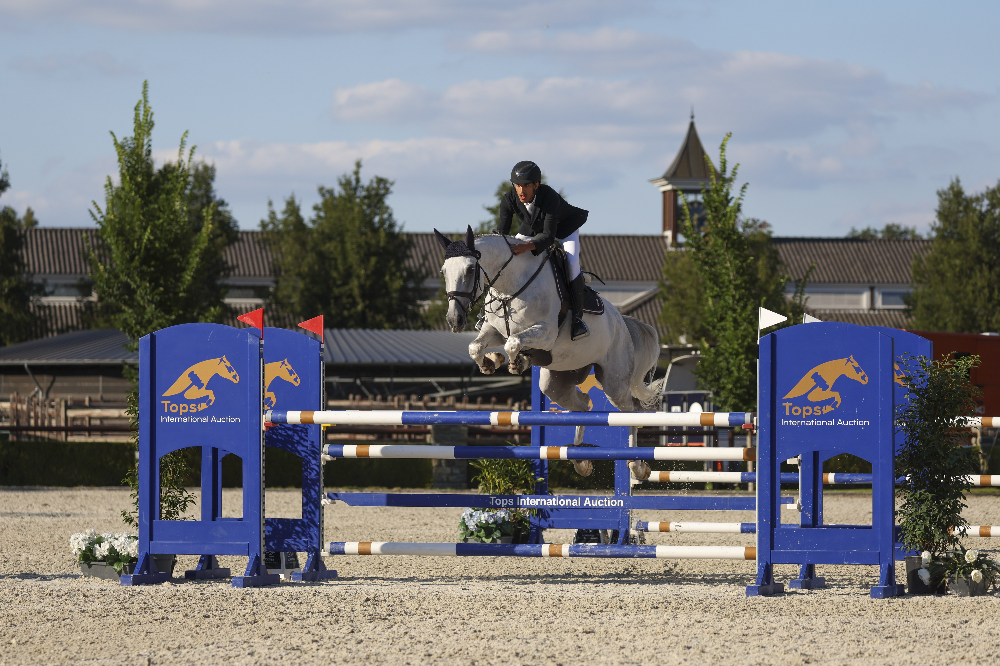

Mark Bluman conquista el Gran Premio de Canadá en su debut en Spruce Meadows
El jinete colombiano logró uno de los dos únicos dobles recorridos sin penalización para alzarse con la victoria en el prestigioso RBC Grand Prix of Canada, presented by Rolex, disputado el 13 de junio.

Uso editorial
Mark Bluman (COL) se estrenó por todo lo alto en Spruce Meadows al conquistar el RBC Grand Prix of Canada, presented by Rolex, prueba estelar del torneo 'National' celebrado en el icónico International Ring de Calgary. El jinete colombiano y su montura Landon de Nyze fueron uno de los dos únicos binomios en completar un doble recorrido sin faltas, deteniendo el cronómetro en 44.44 segundos.
El recorrido diseñado por Olaf Petersen Jr. planteó un desafío mayúsculo: 570 metros de trazado con 14 obstáculos (17 esfuerzos) y un tiempo permitido de 86 segundos. De los 31 binomios inscritos, procedentes de diversos países, solo seis lograron superar la primera manga sin penalización para acceder al desempate.
Jos Verlooy (BEL) montando a Nixon Van't Meulenhof también firmó un recorrido impecable en el barrage, finalizando segundo con un tiempo de 49.02 segundos. El podio lo completó Daniel Coyle (IRL) con Farrel, quien registró el tiempo más rápido de la jornada (41.99s) pero una barra abajo le dejó con cuatro puntos de penalización, relegándole a la tercera plaza.
"Creo que todos en este deporte necesitamos un poco de suerte. Son muchas cosas que deben confluir para poder competir a alto nivel. Empezando por mozos de cuadra, herradores, veterinarios, propietarios, entrenadores... afortunadamente cuento con un equipo muy grande detrás de mí", declaró Bluman tras su histórica victoria.
Amy Millar (CAN) con Gaiete D'elle y Jad Dana (LBN) con Itchock Des Dames completaron el top cinco del Gran Premio. Entre los diez primeros clasificados figuraron representantes de seis naciones diferentes, reflejo del carácter internacional del evento.
En otras pruebas destacadas de la jornada, Daniel Coyle se resarció conquistando la Maritime Travel Cup 1.40m con Nord Face VDL en 37.59 segundos, imponiéndose a 37 participantes. El canadiense Kyle King con Ninja BF fue segundo, mientras que Emily Esau Williams (USA) montando a Air Jordan Delacense cerró el podio.
El torneo 'National' de Spruce Meadows no solo ofreció salto de élite, sino también numerosas actividades complementarias, incluyendo el ChangemakeHER Forum (un evento de liderazgo femenino que agotó entradas), carreras de corgis y perros salchicha, competiciones FireFit, zona infantil y activaciones especiales como Barbie x Spruce Meadows.
Ver competiciones de Spruce Meadows
— Redacción de Hípica al Día